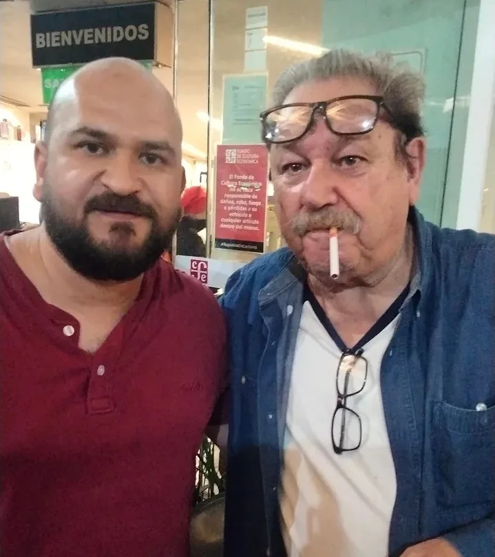
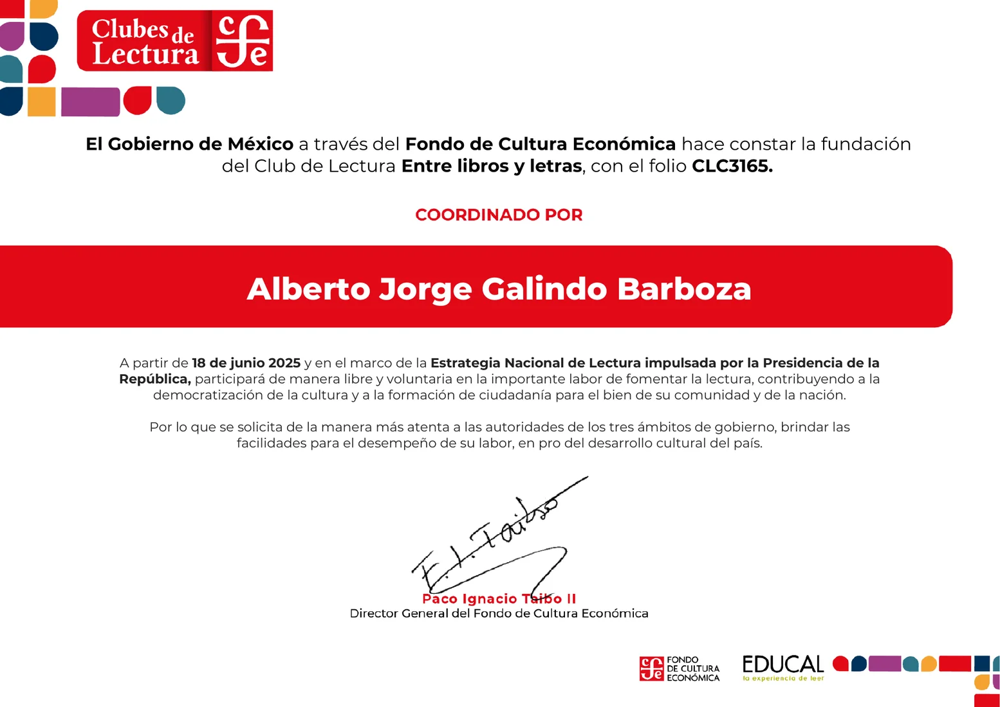
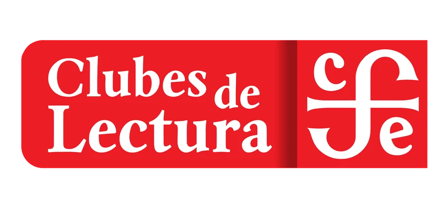

Descubrir
Autores, géneros y perspectivas que amplían nuestra mirada.
Quiénes somos
Una comunidad nacida en Tepatitlán para leer sin prisa, conversar con respeto y dejarse transformar por las palabras.
Nuestra razón de ser
Entre libros y letras nació para crear un espacio donde las personas puedan reflexionar sobre su vida, su entorno y su papel en la sociedad a través de la lectura.
El club fomenta la empatía, el diálogo respetuoso y el crecimiento personal y colectivo. No se requiere experiencia previa: basta el deseo de compartir, escuchar y dejarse transformar por las palabras.
Autores, géneros y perspectivas que amplían nuestra mirada.
Conversar con libertad, atención y respeto.
Hacer de la lectura una experiencia compartida y cercana.

Fundación
El club fue constituido el 18 de junio de 2025 en el marco de los Clubes de Lectura del Fondo de Cultura Económica.
Ver acta de fundación
Un año en seis momentos
Una línea del tiempo construida a partir de las bitácoras del club.

Presencial y en línea
Las reuniones se realizan en Tepatitlán de Morelos y, cuando hace falta, también mediante espacios virtuales que permiten participar desde otros lugares.